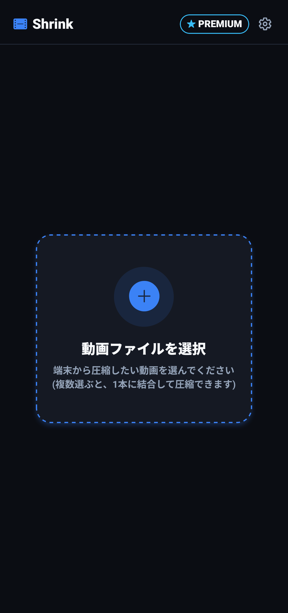
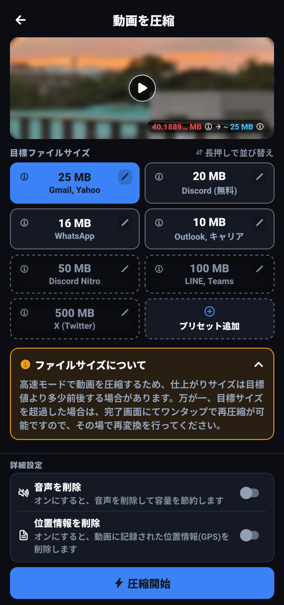

📖 はじめに
「Shrink」は、スマートフォンで撮影した高画質動画や長尺動画を、メール添付・LINE・Discord・X（旧Twitter）などの送信制限に合わせて、ワンタップで最適なファイルサイズへ圧縮できる動画ユーティリティアプリです。
ビットレートや解像度などの難しい専門知識は不要です。「Gmail（25MB）」「Discord無料版（10MB/25MB）」「LINE（100MB）」などの送信先プリセットを選ぶだけで、自動で最適な画質バランスを計算して高速エンコードします。さらに、複数動画の結合、音声・位置情報の削除、万が一のサイズ超過時のワンタップ再圧縮など、スマートな動画共有を支える機能を備えています。


🔍 やりたいことから探す
行いたい操作や目的に合わせて、各機能の詳細解説ページへ直接移動できます。
📑 機能一覧
機能 01: 動画の圧縮
目標サイズ（25MB・10MB・100MBなど）を選ぶだけの直感圧縮。自前プリセットの追加・編集、ドラッグ並び替え、音声や位置情報の削除機能を解説します。
使い方を見る ›機能 02: 動画の結合
複数動画を1本にまとめる結合機能。選択リストのドラッグ順序変更、結合前の通しプレビュー再生、バックグラウンドでの結合処理を解説します。
使い方を見る ›機能 03: 保存と再圧縮
Before/Afterの容量比較・削減率表示、フルスクリーンプレビュー再生、端末アルバムへの保存、目標サイズ超過時のワンタップ再圧縮機能を解説します。
使い方を見る ›機能 04: 設定・PREMIUM
ダークモード・ウォームライトのスキン切り替え、文字サイズ・言語設定、暗号化バックアップと復元、広告非表示・無制限プリセットのPREMIUMプランを解説します。
使い方を見る ›❓ 全体のよくある質問（FAQ）
Q 動画の圧縮中にアプリを閉じても処理は続きますか？
はい、動画の圧縮および結合処理はAndroidのバックグラウンドタスク（WorkManager）として実行されます。処理中に他のアプリを使用したり画面をオフにしたりしても、処理が中断されることなく継続し、完了すると通知でお知らせします。
Q 圧縮すると元動画は上書き・削除されてしまいますか？
いいえ、元動画は一切変更・削除されません。圧縮・結合された動画は完全に別の新しい動画として生成され、「アルバムに保存」をタップした際にギャラリーへ新規保存されます。
Q 無料版とPREMIUMプランの違いは何ですか？
無料版でも動画の圧縮・結合、音声・位置情報の削除、自前プリセットの追加（最大5個まで）などすべての基本機能を制限なくご利用いただけます。PREMIUMプラン（買い切り）をご購入いただくと、アプリ内の広告が完全に非表示になり、自前プリセットを無制限に追加できるようになります。
Q 機種変更時に追加したプリセットを引き継ぐことはできますか？
はい。「設定」画面の「データのバックアップ」からパスワード保護された暗号化バックアップファイルを出力し、新しい端末で「データを復元」することで、追加した自前プリセットや並び順をそのまま引き継ぐことができます。